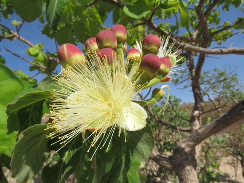

Caryocaraceae
Souari Nut Family
Caryocaraceae is a small family of trees and shrubs belonging to the order Malpighiales, native to the Neotropics. Members are easily recognized by their typically opposite, trifoliolate leaves bearing small stipules at the base of the petiole and distinctive stipels at the base of the leaflets. They produce large, often showy flowers with numerous stamens and develop large, woody drupaceous fruits. Several species of Caryocar are important locally for their edible, oily seeds (like the Souari nut) or oily mesocarp (like the Pequi fruit).
Overview
Caryocaraceae is classified within the large and diverse order Malpighiales, part of the Fabid (Eurosid I) clade of Rosids. This family is quite small, comprising only two genera, Caryocar and Anthodiscus, with a total of about 25 species. Its distribution is exclusively Neotropical, centered in tropical Central and South America, particularly within the Amazon basin and adjacent regions like the Brazilian Cerrado.
The family consists of woody plants, ranging from shrubs to large canopy trees. They are notable for their distinctive leaves, which are usually opposite and always palmately trifoliolate (having three leaflets). The presence of both stipules at the petiole base and stipels at the leaflet bases is a key diagnostic feature. Flowers are large, radially symmetrical, and characterized by having hundreds of long, often colorful stamens. The fruit is also characteristic: a large, heavy, woody drupe containing one or more large, oily seeds (kernels) protected by a very hard inner layer (endocarp).
Several species of Caryocar, such as C. brasiliense (Pequi) and C. nuciferum (Souari nut), are regionally important sources of food and oil, harvested from the wild or semi-cultivated. The oily mesocarp or the seeds are consumed, contributing significantly to local diets and economies in parts of Brazil, Colombia, the Guianas, and other South American countries.
Quick Facts
- Scientific Name: Caryocaraceae Voigt
- Common Name: Souari Nut family (or Pequi family)
- Number of Genera: 2 (Caryocar, Anthodiscus)
- Number of Species: Approximately 25
- Distribution: Neotropics (Tropical Central & South America)
- Evolutionary Group: Eudicots - Rosids (Fabids / Eurosids I) - Order Malpighiales
Key Characteristics
Growth Form and Habit
Members are trees or shrubs, often reaching large sizes and contributing to the canopy layer in tropical forests. They have solid wood.
Leaves
Leaves are typically opposite and decussate (arranged in perpendicular pairs), though they are alternate in the genus Anthodiscus. They are characteristically palmately trifoliolate, meaning each leaf consists of three leaflets attached at the same point on the long petiole. Leaflets are usually large, pinnately veined, often with serrated margins. Stipules are present, often conspicuous and interpetiolar (between the petioles of opposite leaves) or intrapetiolar (between the petiole and the stem). A key diagnostic feature is the presence of small, stipule-like structures called stipels at the base of each leaflet where it attaches to the main petiole.
Inflorescence
Inflorescences are typically terminal (at the end of branches), taking the form of a raceme or corymb (a flat-topped or convex raceme). They are often large and bear few to many flowers.
Flowers
Flowers are generally large, showy, actinomorphic (radially symmetrical), and bisexual. They are typically 5-merous, but sometimes 4- or 6-merous. Key features:
- Calyx: Consists of 5 (or 4-6) sepals that are fused at the base into a cup-like structure (cupular), often thick or leathery, and persistent in fruit.
- Corolla: Consists of 5 (or 4-6) petals that are free (not fused), large, often thick or fleshy, concave, typically yellowish or whitish, and usually fall off early (deciduous).
- Androecium: Characterized by very numerous stamens, often ranging from 100 to over 700. The long filaments are often brightly colored (yellow, red) and typically fused at their bases into a ring or short tube (monadelphous), or sometimes into indistinct bundles. The outermost stamens may sometimes be sterile (staminodes). Anthers are small, dorsifixed or basifixed, opening by longitudinal slits.
- Gynoecium: The ovary is superior, formed from 4 to 20 fused carpels (syncarpous), resulting in an ovary with the same number of locules as carpels. Placentation is axile, with a single ovule in each locule. A single, long, terminal style with a small capitate or slightly lobed stigma is common (e.g., Caryocar), or styles may be multiple (Anthodiscus).
Fruits and Seeds
The fruit is a large, heavy, typically subglobose drupe, though sometimes described as a nut with a fleshy or leathery outer layer (exocarp and mesocarp). The inner layer (endocarp) is extremely hard, thick, woody, often with a warty, ridged, or spiny surface. This "stone" encloses 1 to many (up to the original number of locules, though often fewer develop) large seeds (kernels). The mesocarp in some species (C. brasiliense) is notably thick, fleshy, and oily. The seeds are large, kidney-shaped (reniform), rich in oil, and have little or no endosperm.
Chemical Characteristics
The family is known for its high content of oils, particularly in the seeds and sometimes the fruit mesocarp. Tannins and possibly saponins may also be present. Importantly, unlike families in the Brassicales order, Caryocaraceae does not produce glucosinolates.
Field Identification
Caryocaraceae trees and shrubs are quite distinctive in the Neotropics due to their unique combination of leaf, flower, and fruit characteristics.
Primary Identification Features
- Habit: Trees or shrubs.
- Opposite (usually) Trifoliolate Leaves: Three leaflets per leaf, typically arranged oppositely on the stem (Caryocar).
- Stipels Present: Look for small appendages at the base of each leaflet where it joins the petiole. Stipules also present at petiole base.
- Large Flowers with Numerous Stamens: Showy flowers with hundreds of long, often colorful stamens fused at the base.
- Large Woody Drupe/Nut: Heavy fruit with a very hard, often textured inner layer (endocarp) surrounding large oily seeds.
- Neotropical Distribution: Found only in tropical Central and South America.
Secondary Identification Features
- Terminal Racemes/Corymbs: Large inflorescences at branch tips.
- Superior Ovary: Ovary positioned above petal/sepal attachment.
- Large, Free Petals: Usually 5 large, fleshy petals.
- Multi-locular Ovary: Ovary with 4-20 chambers.
Seasonal Identification Tips
- Year-Round: The distinctive opposite (usually) trifoliolate leaves with stipels are excellent vegetative characters.
- Flowering Season: Large, showy flowers with masses of stamens are unmistakable when present (timing varies regionally).
- Fruiting Season: The large, heavy, woody fruits are highly characteristic and may persist on the ground after falling.
Common Confusion Points
- Opposite Compound Leaves: Families like Bignoniaceae or some Verbenaceae may have opposite compound leaves, but flowers are typically zygomorphic with few stamens, and fruits are capsules or different types of drupes. They lack stipels.
- Trifoliolate Leaves: Common in Fabaceae (Legumes), but leaves are usually alternate, flowers are papilionaceous or caesalpinioid, and fruits are legumes. Fabaceae may have stipels but lack the combination of opposite leaves and numerous stamens in actinomorphic flowers.
- Other Malpighiales: This order is huge and diverse. While phylogenetically related, families like Euphorbiaceae, Passifloraceae, or Salicaceae have very different combinations of leaf arrangement, flower structure (often unisexual in Euphorbiaceae, unique structures in Passifloraceae), and fruit types. The combination of opposite trifoliolate leaves with stipels and the specific flower/fruit is key for Caryocaraceae.
Field Guide Quick Reference
Look For:
- Tree or shrub habit
- Opposite (usu.) trifoliolate leaves
- Stipels at leaflet base (+ stipules)
- Large flowers with numerous stamens
- Superior ovary (multi-locular)
- Large woody drupe/nut fruit
- Neotropical range
Key Variations:
- Leaves opposite (Caryocar) vs. alternate (Anthodiscus)
- Number of carpels/locules (4-20)
- Fruit mesocarp fleshy/oily vs. leathery
- Endocarp surface smooth vs. warty/spiny
Notable Examples
The family is dominated by the genus Caryocar, known for its economically important edible nuts and fruit pulp in South America.

Caryocar species (e.g., C. brasiliense, C. nuciferum)
Pequi, Souari Nut
The main genus, comprising large trees with opposite, trifoliolate leaves (with stipules and stipels). Flowers are large with yellowish petals and masses of long yellow or reddish stamens. Fruits are large woody drupes. C. brasiliense (Pequi) is famous in Brazil for its strong-flavored, oily yellow mesocarp surrounding the spiny endocarp. C. nuciferum and others (Souari Nuts) are valued for their large, delicious, oily seeds (kernels).

Anthodiscus species (e.g., A. pilosus)
Anthodiscus
The second, smaller genus of trees and shrubs found in northern South America (Amazonia, Guianas). It differs from Caryocar primarily in having alternate (rather than opposite) trifoliolate leaves, often smaller flowers sometimes in denser clusters, and multiple styles. The fruit is also a woody drupe but typically smaller than in Caryocar. Less well-known and of less economic importance.

Caryocar Fruit Structure
Pequi / Souari Nut Fruit
The characteristic large fruit is a drupe with a leathery exocarp, an often oily mesocarp (especially in Pequi), and a very hard, woody endocarp ("stone") that may be smooth, warty, or spiny. Inside the endocarp are 1-4 large, oily, edible seeds or kernels.
Phylogeny and Classification
Caryocaraceae is placed within the large and highly diverse rosid order Malpighiales. This order contains roughly 40 families, including well-known groups like Euphorbiaceae, Salicaceae, Passifloraceae, and Violaceae, representing a major radiation of flowering plants.
The exact position of Caryocaraceae within Malpighiales is still being refined by molecular phylogenetic studies. It is often found to be closely related to a clade containing families like Rhizophoraceae (Mangrove family), Erythroxylaceae (Coca family), and potentially Linaceae (Flax family), although the branching order and relationships among these groups within the broader Malpighiales context can vary between studies. Caryocaraceae represents a morphologically distinct lineage characterized by its unique leaf structure and fruit type within this order.
Position in Plant Phylogeny
- Kingdom: Plantae
- Clade: Angiosperms (Flowering plants)
- Clade: Eudicots
- Clade: Rosids (Fabids / Eurosids I)
- Order: Malpighiales
- Family: Caryocaraceae
Evolutionary Significance
Caryocaraceae offers insights into:
- Diversity within Malpighiales: Showcases the evolution of the large tree habit and specialized fruit morphology within this vast order.
- Leaf Morphology: The consistent trifoliolate leaf structure with both stipules and stipels is an unusual and specialized trait.
- Floral Evolution: The development of extremely numerous stamens (polyandry) is a notable feature, likely related to pollination strategies (perhaps by large insects or bats).
- Fruit Dispersal Syndromes: The large, heavy, woody fruits with oily rewards suggest dispersal primarily by large mammals (megafaunal dispersal), particularly relevant in the Neotropics.
- Ethnobotany and Domestication: Species like Pequi demonstrate the long history of human interaction and use of native plant resources in South America.